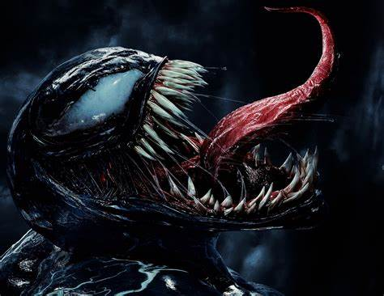
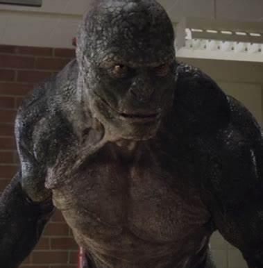
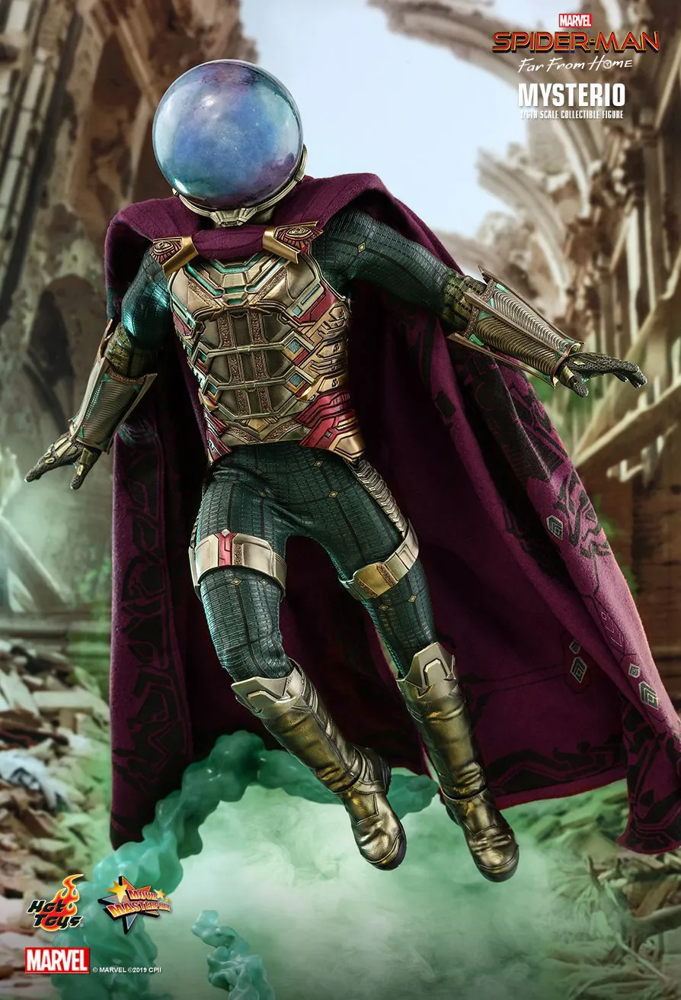
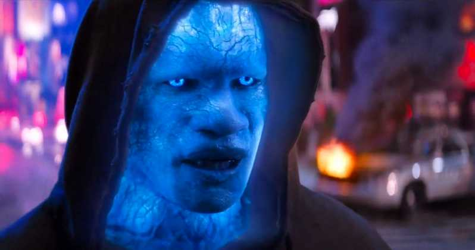
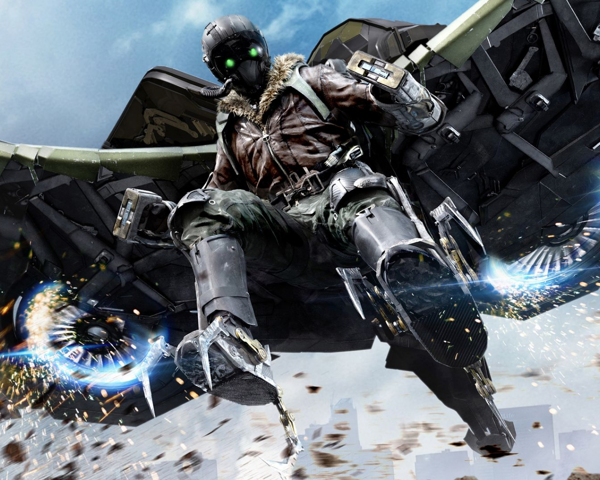
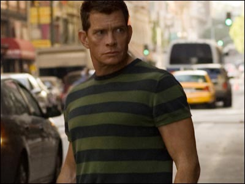

Seja bem vindo ao site Spiderverse Heroes
Vamos explorar o incrível universo dos Homens e Mulheres-Aranha, conhecendo as versões mais marcantes desses heróis da Marvel. Venham descobrir quem foram os atores que deram vida a eles no cinema e relembrar os filme que fizeram história nas telonas!
Trilogia
Na trilogia de filmes do Homem-Aranha, Peter Parker é um jovem comum que ganha superpoderes depois de ser picado por uma aranha geneticamente modificada. Ele lida com o peso de ser um herói, enfrentando vilões como o Duende Verde, Doutor Octopus, Homem-Areia e Venom, enquanto tenta equilibrar sua vida pessoal. A história aborda temas como sacrifício e responsabilidade, mostrando como o poder afeta não só Peter, mas todos ao seu redor. E no vasto Aranhaverso, Gwen Stacy e Miles Morales também vestem o manto de Homem-Aranha, cada um com suas próprias histórias e desafios!
Homens-Aranha
Tobey Maguire

Tobey Maguire é um ator dos EUA que viveu o Homem-Aranha nos filmes de 2002 a 2007, dirigidos pelo Sam Raimi. No papel, ele era o Peter Parker meio nerd, tímido, que tinha que conciliar a vida de estudante com a de herói.
Andrew Garfield

Andrew Garfield é um ator britânico que interpretou o Homem-Aranha nos filmes de 2012 e 2014, da franquia "O Espetacular Homem-Aranha". O Peter Parker dele era mais descolado e irônico, mas ainda assim lidava com as dificuldades de ser um jovem com grandes responsabilidades enquanto enfrentava os vilões.
Tom Holland

Tom Holland é um ator britânico que assumiu o papel do Homem-Aranha nos filmes do Universo Marvel, a partir de 2016. O Peter Parker dele é o mais jovem, cheio de energia, meio atrapalhado, e traz um toque de humor enquanto tenta equilibrar a vida de estudante com a de super-herói em meio aos Vingadores.
Aranhaverso
Miles Morales (Terra-1610)

Miles Morales, um adolescente afro-latino do Brooklyn, apareceu nos quadrinhos em 2011 e trouxe uma nova pegada ao Homem-Aranha, com seu estilo descolado e poderes únicos. Ele ganhou fama nos filmes animados, como "Homem-Aranha: No Aranhaverso" (2018), destacando-se pela autenticidade e carisma. Em 2023, voltou em "Homem-Aranha: Através do Aranhaverso", onde enfrenta novos desafios e explora diferentes dimensões do herói.
Gwen Stacy (Terra-65)

Gwen Stacy, no Aranhaverso, é uma versão alternativa da clássica personagem da Marvel, conhecida como Spider-Gwen. Gwen se destaca por ser forte, independente e destemida, trazendo uma nova perspectiva ao papel. Além de enfrentar vilões, ela lida com seus próprios desafios, como perdas pessoais e a pressão que vem com o título de heroína. Em suas aventuras, Gwen se torna uma figura inspiradora no multiverso do Homem-Aranha, provando que o heroísmo pode surgir de qualquer lugar.
Peter Parker (Terra-616)

Peter Parker da Terra-616 é a versão original do Homem-Aranha e o principal herói de sua realidade. Ele é um jovem de Nova York que ganha poderes após ser picado por uma aranha radioativa, equilibrando sua vida pessoal com as responsabilidades de proteger a cidade. O seu lema é "com grandes poderes vêm grandes responsabilidades" guia suas ações como um símbolo de sacrifício e perseverança em sua Terra.
Homem-Aranha Noir (Terra-90214)

O Homem-Aranha Noir é uma versão alternativa de Peter Parker, situada em 1933, durante a Grande Depressão, no universo Marvel Noir (Terra-90214). Ele ganha seus poderes de uma aranha mística enquanto investida atividades criminosas, e luta contra mafiosos e políticos corruptos em um mundo mais sombrio e violento, inspirado no estilo noir. Vestindo um traje preto e máscara de aviador, ele tem um estilo de combate mais brutal e histórias com um tom mais sério e realista.
Presunto-Aranha (Terra-8311)

O Presunto-Aranha, também conhecido como Peter Porker, é uma versão cômica do Homem-Aranha, vinda da Terra-8311, um universo onde todos os personagens são animais antropomorfizados. Peter Porker era originalmente um porco comum, que se transformou em uma versão do Homem-Aranha após ser mordido por uma aranha radioativa. Com poderes semelhantes aos do Homem-Aranha clássico, ele luta contra inimigos igualmente caricatos, como o Duende Verde-Ganso e o Bode Octopus. Sua história é repleta de humor e absurdo.
Peni Parker (Terra-14512)
.jpg)
Peni Parker, da Terra-14512, vive em um universo futurista inspirado por animes e mangás. Ela não tem poderes aracnídeos, mas pilota o mecha SP//dr, controlado por uma aranha radioativa geneticamente ligada a ela. Peni assume o traje após a morte de seu pai e usa sua inteligência e tecnologia para enfrentar vilões. Sua história tem um estilo visual distinto, com influências da cultura japonesa.
Vilões
Venom
Venom é um dos vilões mais icônicos do universo do Homem-Aranha, originado como um simbiótico alienígena que se liga a um hospedeiro humano. A versão mais conhecida é Eddie Brock, um ex-jornalista que se torna o anfitrião do simbiótico após ser rejeitado pelo Homem-Aranha. Venom possui poderes semelhantes ao Homem-Aranha, como força sobre-humana e agilidade, além de habilidades únicas como camuflagem. Motivado por vingança contra Peter Parker, sua relação com o herói é complexa, e ele é frequentemente retratado como um anti-herói que busca proteger os inocentes.
Duende Verde

O Duende Verde é um dos vilões mais icônicos do Homem-Aranha, cuja verdadeira identidade é Norman Osborn, um industrial rico que se transforma em um ser superpoderoso após se submeter a experimentos químicos. Vestindo um traje verde e usando um jetpack e abóboras explosivas, ele se torna um antagonista pessoal de Peter Parker, já que Norman também é amigo da família de Peter. Essa relação torna os confrontos entre eles emocionais e complexos.
Doutor Octopus

O Doutor Octopus, ou Otto Octavius, é um dos vilões mais icônicos do Homem-Aranha. Ele é um gênio da ciência que, após um acidente em um experimento, fica ligado a quatro braços mecânicos que lhe conferem força e agilidade sobre-humanas. Conhecido por sua inteligência estratégica, Otto planeja crimes complexos e tem uma relação multifacetada com Peter Parker. Em algumas histórias, ele é retratado como um personagem trágico, lidando com a perda de controle sobre sua vida.
Rei do crime

O Rei do Crime, ou Wilson Fisk, é um dos vilões mais poderosos do universo Marvel, especialmente como inimigo do Homem-Aranha e do Demolidor. Ele é um gângster e empresário corrupto, utilizando sua força e inteligência para controlar o submundo do crime em Nova York. Fisk é um antagonista frio e calculista, habilidoso em manipular pessoas e situações. Sua relação com Peter Parker é complexa, frequentemente tentando derrotá-lo enquanto mantém uma fachada de respeitabilidade.
Lagarto
O Lagarto, ou Dr. Curt Connors, é um vilão do Homem-Aranha e um brilhante cientista especializado em genética. Após um experimento para regenerar seu braço perdido, ele se transforma em uma criatura reptiliana, ganhando força sobre-humana, agilidade e habilidades de cura, mas também perdendo parte de seu controle humano. Embora suas ações como Lagarto sejam perigosas, o personagem é frequentemente retratado como trágico, preso entre seu desejo de ajudar e os instintos agressivos do Lagarto. A relação entre Connors e Peter Parker é complexa, já que Connors é um mentor para Peter.
Mystério
Mysterio, conhecido como Quentin Beck, é um vilão do Homem-Aranha e mestre das ilusões. Antes de se tornar criminoso, ele era especialista em efeitos visuais, mas se sentia subestimado. Para se vingar, usa suas habilidades para criar ilusões e enganar o Homem-Aranha e o público. Famoso por seus truques e manipulações, Mysterio utiliza tecnologia avançada para distorcer a realidade e frequentemente tenta destruir a reputação do Homem-Aranha. A relação entre ele e Peter Parker é marcada por enganos, tornando Mysterio um adversário astuto e imprevisível.
Electro
Electro, ou Max Dillon, é um vilão do Homem-Aranha que pode controlar e gerar eletricidade. Ele ganha seus poderes após um acidente como eletricista. Como Electro, ele pode lançar raios e absorver eletricidade, tornando-se um adversário perigoso. O personagem busca reconhecimento e poder, motivado por sua frustração.
Abutre
Abutre, ou Adrian Toomes, é um vilão do Homem-Aranha que cria um traje com asas que lhe permite voar e aumenta sua força. Frustrado com sua carreira e a traição de parceiros, ele se torna o Abutre para roubar tecnologia e se vingar. Sua relação com o Homem-Aranha é marcada por confrontos aéreos.
Homem-Areia
Homem-Areia, ou Flint Marko, é um vilão do Homem-Aranha que pode se transformar em areia, permitindo-lhe alterar sua forma e tamanho após um acidente com partículas experimentais. Motivado por uma vida criminosa e problemas pessoais, ele comete crimes para sustentar sua família. Embora seja um adversário, Marko é retratado como um personagem trágico, lutando entre o crime e a responsabilidade como pai.
Curiosidades sobre o Homem-Aranha
- Todos os filmes e séries do Homem-Aranha são inspirados na origem dos quadrinhos, especialmente sua estreia em Amazing Fantasy #15. Todos trazem a história da picada da aranha e a transformação de Peter Parker.
- Os filmes com Tobey Maguire, Andrew Garfield e Tom Holland mantêm Peter Parker como um jovem lidando com problemas comuns de adolescentes, como escola e relações pessoais. A versão de Tom Holland enfatiza isso ainda mais, mostrando Peter como um estudante colegial.
- A origem de seus poderes, causada pela picada da aranha, está presente em quase todas as adaptações, embora em algumas versões (como no filme "The Amazing Spider-Man"), a aranha esteja conectada a experimentos científicos.
- O "sentido-aranha" aparece em várias produções, com diferentes níveis de destaque. No universo cinematográfico da Marvel (MCU), essa habilidade é mostrada de maneira sutil, mas em filmes anteriores, como na trilogia de Tobey Maguire, ela é mais evidente.
- Em todas as adaptações, Peter é o protagonista, diferente de outros super-heróis adolescentes que normalmente têm papéis secundários. Isso foi mantido fiel à criação original.
- Embora os filmes não mostrem diretamente a dificuldade de Stan Lee em introduzir o personagem, o sucesso esmagador do Homem-Aranha em todas as mídias prova que o risco valeu a pena, e o personagem se tornou um dos mais amados do mundo.
- xEm todas as adaptações, o primeiro traje de Peter Parker geralmente é feito de forma improvisada, refletindo a ideia de um jovem herói criando seu próprio visual. Na versão do MCU, o traje evolui graças à tecnologia de Tony Stark, mas começa como algo mais simples.
- O conceito de multiverso está presente especialmente no filme animado Spider-Man: Into the Spider-Verse (Homem-Aranha no Aranhaverso), onde várias versões do Homem-Aranha de diferentes realidades se encontram, incluindo Miles Morales, Spider-Gwen e o Homem-Aranha 2099. O live-action Spider-Man: No Way Home também explora o multiverso, trazendo Tobey Maguire e Andrew Garfield de volta como suas versões do herói.
- Todos os filmes e séries refletem o status de ícone global do Homem-Aranha, sendo um dos heróis mais populares da cultura pop, aparecendo em várias mídias por décadas.
- Cada versão cinematográfica do Homem-Aranha (Tobey Maguire, Andrew Garfield e Tom Holland) trouxe algo novo ao personagem. Além disso, a série animada Aranhaverso e outras séries de TV animadas continuam a expandir o universo do herói.